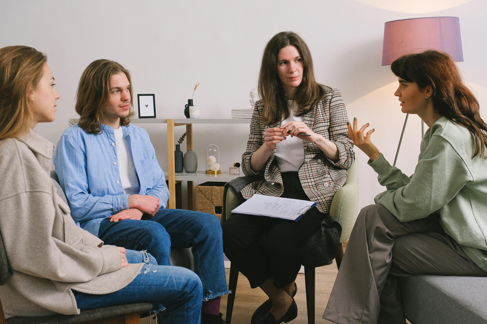
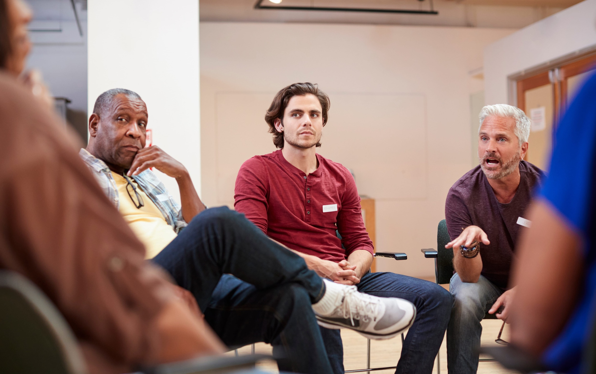

Find More Support
What to Expect
Whether support groups meet in person or by video call, they create a circle where people support one another through a kind of grief they all understand.
Each person's grief is unique, but a group offers the chance to meet others whose loss and circumstances may feel meaningfully similar to your own.
No one is required to share in a Peer Grief Support Group. Both listening and speaking can be healing, and you are welcome to take part in whatever way feels right for you.

Sharing in Community
Peer Grief Support Groups are designed to be safe spaces where you can talk about the most difficult parts of your grief and be accepted without judgment, no matter what has happened.
They are also a place to share who your loved one was, why they matter so deeply to you, and how much they are missed. And yes, you can cry when you need to.

Groups across Massachusetts
SADOD and our partner, The Sun Will Rise, provide training, technical assistance, and robust support to about 35 Peer Grief Support Groups (PGSGs) across Massachusetts that specialize in grief after a substance-use death. There are currently 14 face-to-face meetings and 18 virtual meetings every month.
Hundreds of grieving people attend PGSGs every month, and the most visited page on sadod.org is our searchable Support Group Directory, which lists the 35 substance-use focused grief groups and about 30 additional support groups for grieving people.

Need help finding the right group?
There are specialty groups for men, spouses, multiple losses, and other populations, so we can ensure that grievers are connected with a support group that is right for them.
If you would rather start with a person than a directory search, email us and we will help connect you with a group that feels right for you.
We can help you find in-person, virtual, or specialty groups and explain how to join if you would rather start with a conversation than a directory search.